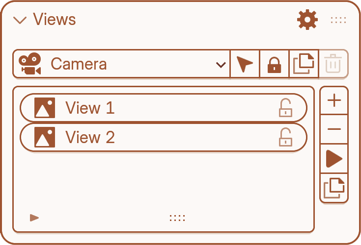
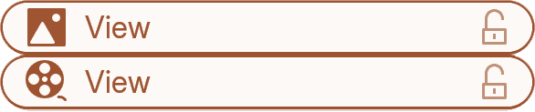
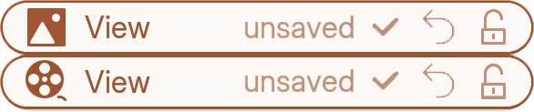
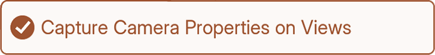

Views panel
1.0Overview
At the top you pick a camera. Keep it creates a Default View at its current position, so there’s always something to come back to.
Below it is that camera’s list of saved views, and down the right side are the buttons to add, remove, go to and duplicate them.
A view stores nothing about the scene, which is why any view works with any capture.

Camera
Camera Dropdown — Picks which camera’s views you’re managing.
Select Camera — Selects that camera in the viewport.
Lock Camera to View — Toggles Blender’s native “lock camera to view” so moving the viewport moves the camera.
Duplicate Camera — Copies the camera along with all of its views.
Delete Camera — Deletes the camera (and its views go with it).
View types
Still view — A single camera position. Click it and the camera goes there.
Animated view — A camera move. Click it and the camera plays that move.
A view becomes animated when you save it with the camera keyframed. Add keyframes to a still view’s camera, press Save, and it converts.

Note: this padlock and the one on each camera do different jobs. This one protects the view; the camera one makes the viewport drive the camera.
Saving changes to a view
A view is always live. Apply one, move the camera or change its lens, and the view’s row tells you if there’s something to save.
You can browse to another view mid-change and come back; the change is still there, still unsaved.
Anything the view stores counts: position, focal length, projection, sensor, clip, depth of field, resolution — and keyframes on an animated view. Changing your render resolution marks the view unsaved too.

unsaved — Camera no longer matches what the view stored.
Save (✓) — Saves the camera’s current state.
Revert (↺) — Discards the change and puts the camera back.
Lock (🔒) — Protects the view.
View actions
Add View — Saves the camera’s current position as a new view.
Remove View — Deletes the selected view.
Go to View — Applies the selected view (moves the camera there and looks through it).
Duplicate View — Makes a copy of the selected view.
View settings
Saves the lens settings with each view — sensor, shift, clip range, depth of field, composition guides — so switching views switches those too, not just the angle.
Never includes background images or colour management.
It only affects still properties. An animated view still stores keyframed camera data, so a focal length animation is saved with it.
